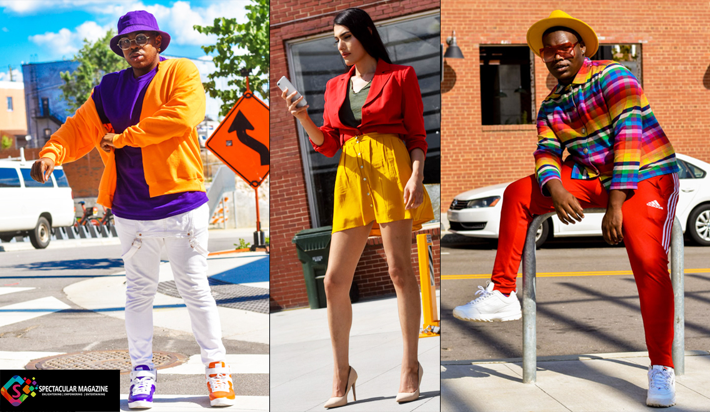

Street style Fashion
Street Fashion is a celebration of creativity, where individuals curate outfits that showcase their personalities and bold fashion choices, often drawing inspiration from divers sources like music,film and youth subcultures.
0
1. Comfort is the New Cool
Streetwear blends comfort with confidence. Oversized hoodies, sneakers, and relaxed fits prove that you don't have to sacrifice ease for style.
2. Layering is an Art
Streetwear layers for style and function. Think oversized shirts over hoodies, jackets over sweats—it’s all about balance and attitude.
3. Accessories Make the Look
Bucket hats, chains, sunglasses, and crossbody bags can elevate a basic outfit. Street style thrives on those bold, finishing touches.
Comments